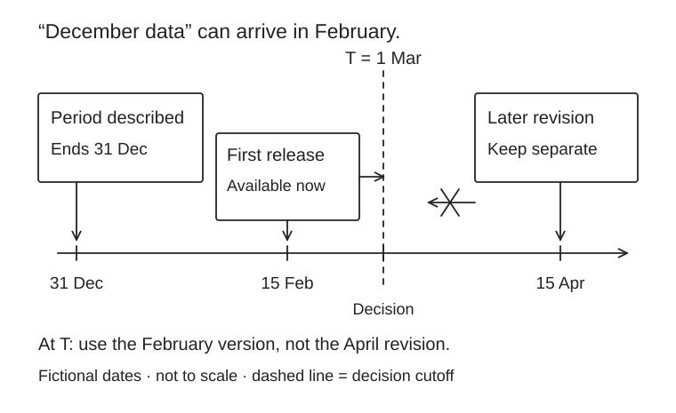

Financial data and research lab
Your technical advantage is strongest when a reviewer can trace a conclusion back to the original data. Start with small, reproducible datasets and a clear decision.

For historical macroeconomic tests, FRED’s real-time periods identify the information known during a chosen period.
| Use | Primary source | Read before use | First exercise |
|---|---|---|---|
| Company reporting | SEC EDGAR | Annual reports and filing history. Preserve filing dates and distinguish original from amended reports. | Reconcile three financial statements before forecasting. |
| Macroeconomics | FRED | Economic time series. Read frequency, units, seasonal adjustment and revision notes. | Explain a rates/inflation scenario and use vintage-aware data for historical tests. |
| Asset-pricing research | Kenneth French Data Library | Factors and research portfolios. Check percent-versus-decimal units and construction changes. | Regress portfolio excess returns on a simple factor model and inspect residuals. |
| Credit learning dataset | UCI credit-default dataset | A historical learning dataset; not representative of every current lending market. | Compare logistic regression with a tree model, calibrate probabilities and state external-validity limits. |
| Indian context | RBI | Monetary, banking and statistical publications. Use the dated original release for policy claims. | Connect a macro change to credit quality or financing cost. |
| Indian market rules | SEBI | Regulatory publications and circulars. Search current primary documents rather than social summaries. | Write a short note on a rule’s impact on a business process. |
| Valuation inputs | Damodaran Online | Author datasets and valuation materials. Record the dataset date and definitions. | Cross-check cost of capital and sector assumptions; do not copy a multiple without context. |
| Reproducible ML | Jansen companion code | Author-maintained examples; licenses and data availability vary by source. | Reproduce one baseline in a pinned environment, then document any changes. |
Three papers, three practical questions
Gu, Kelly & Xiu · Empirical Asset Pricing via Machine Learning
Author research / NBER working paper. Ask which nonlinear relationships improve forecasts and how the evaluation separates time periods. Reproduce a modest baseline; do not present the paper’s results as your strategy’s expected returns.
Bailey and coauthors · Backtest overfitting
Research paper on selection and out-of-sample failure. Ask how many ideas were tried before choosing the winner. Keep a trial register, a simple benchmark, costs and a sealed test set.
FinGPT · Financial language models
Original paper. Ask where data comes from, what the task measures and which errors matter to an analyst. Build a cited extraction or research workflow before trying to predict returns from fluent text.
A data contract for every project
- Source, license, download date and version.
- Observation date versus publication date; no future data in historical features.
- Currency, units, calendar, frequency and missing-value treatment.
- Restatements, revisions, corporate actions and surviving-only samples.
- Train/test boundaries, benchmarks, experiment count and transaction costs where relevant.
Deliverable: a repository someone else can run, a data dictionary, one chart and a recommendation. Read the project briefs and paper-reading loop.